Basketball
Basic question
What is Basketball?
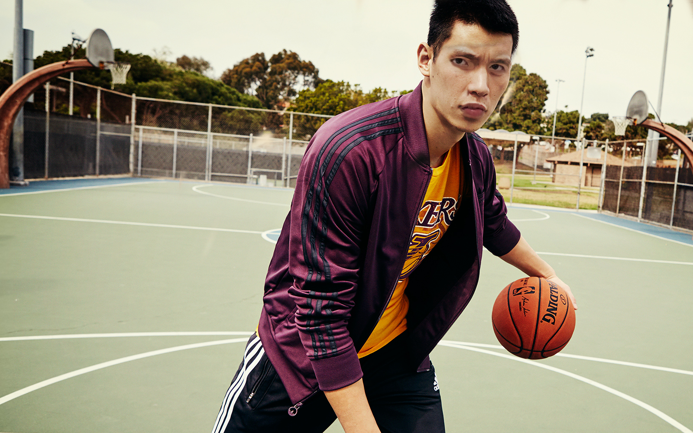
Basketball is a very popular sport.
It is a game that played between two teams of five players in which goals are scored by throwing a ball through a netted hoop fixed at each end of the court.
Why do you want to play Basketball?
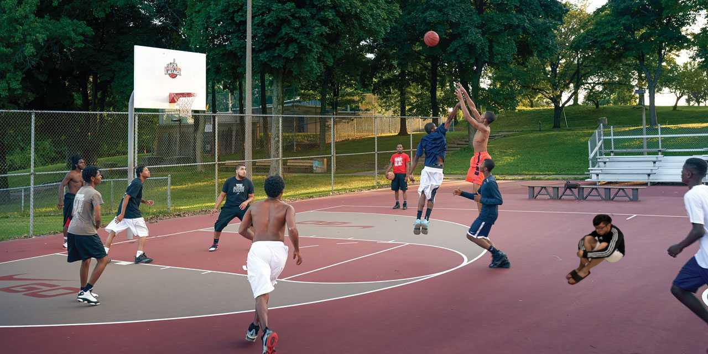
I was very lonely, so I want to make friends by playing basketball.
The step of how can people improve their skill
How to handle a ball?
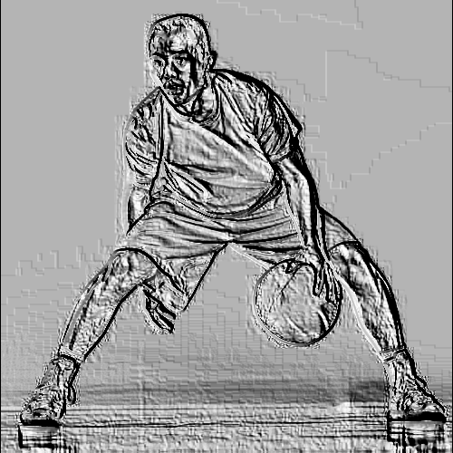
Practive this kind of activity everyday.
How to run with a ball?
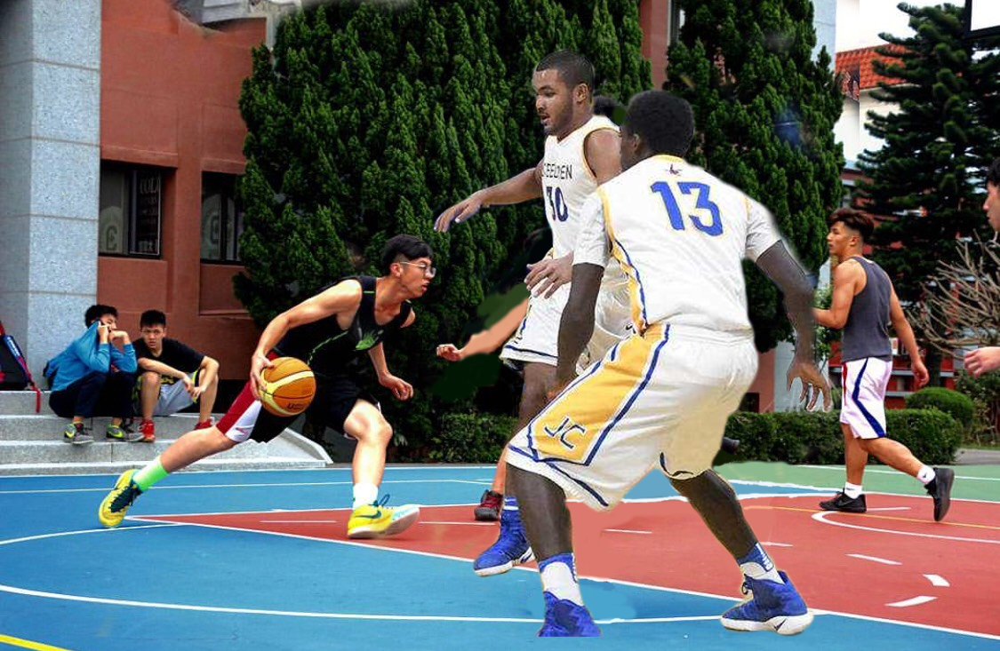
How to put a ball into the basket?
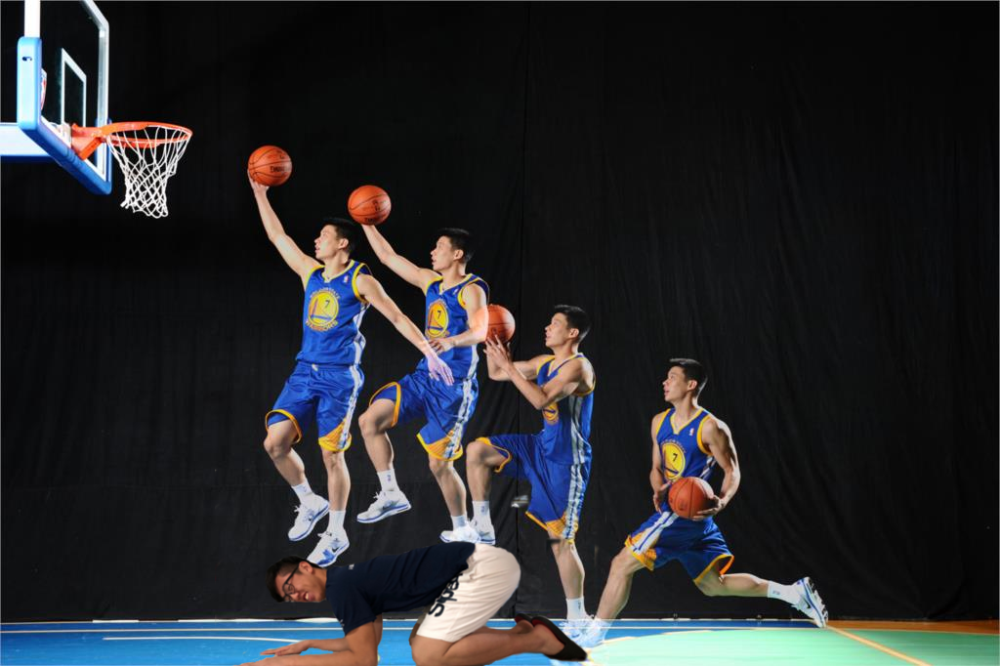
You have to jump on a person's body, then you will know how to put the ball into the basket.
How to shot a ball?
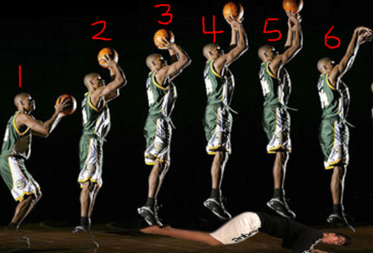
You also have to jump on a person's body, then you will know how to shot the ball.
How to guard people?
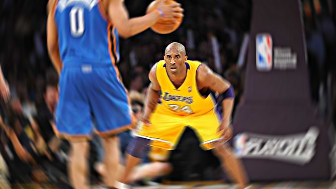
How can people have more kinds of abilities in Playing Basketball
Long-distance running
 Shuttle run
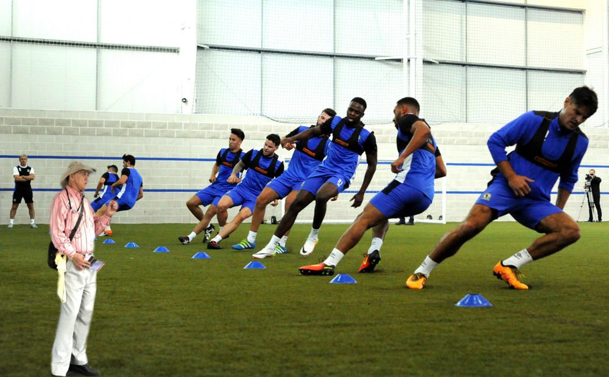
Jumping ability training
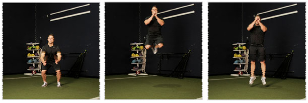
Practive race or sparring race
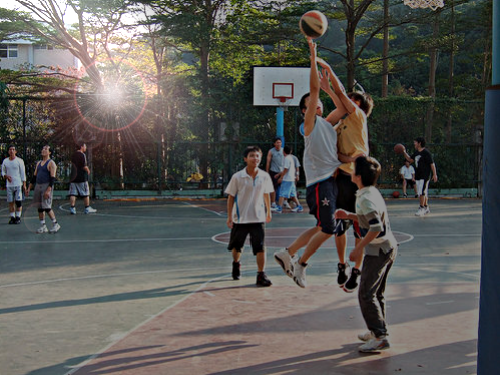
Go to basketball court and play with your friends on the weekend.
Shuttle run
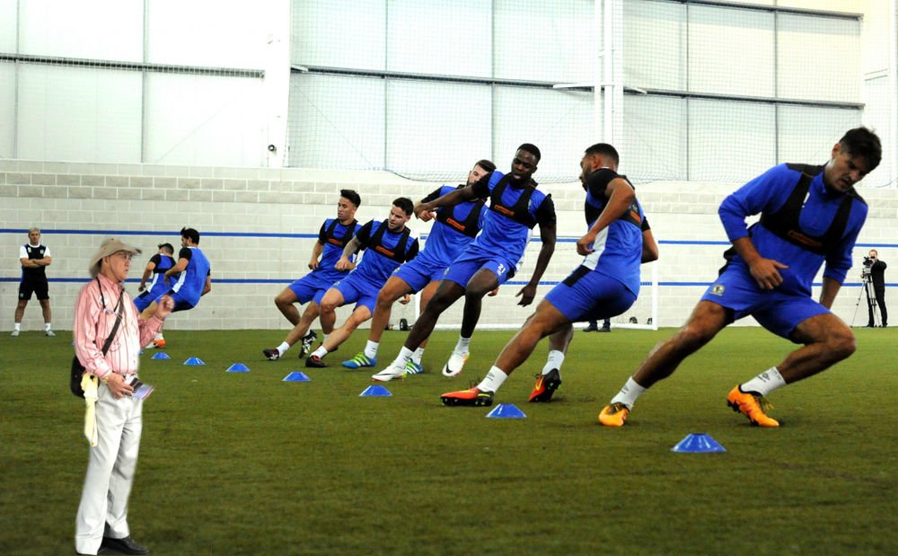
Jumping ability training
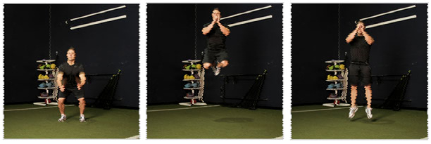
Practive race or sparring race
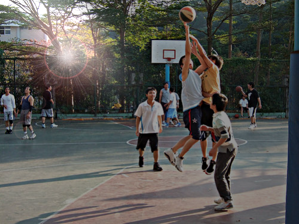
Go to basketball court and play with your friends on the weekend.